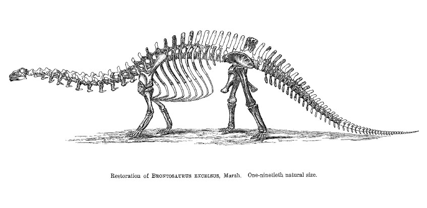

Dear visitor,
Welcome to the repository. These scientific papers by Othniel Charles Marsh are in the public domain (see below), and we are making these photocopies freely available for use by researchers, teachers, historians, dinosaur enthusiasts, and other interested parties. This collection is far from exhaustive, and focuses mainly on Marsh's papers on dinosaurs published in the American Journal of Science between 1877 and 1898. A few works on mammals, birds, turtles, pterosaurs, evolution, and stratigraphy are also included.
Othniel Charles Marsh (1831-1899) was a vertebrate paleontologist and one of the most prominent American scientists of the late 19th century. He persuaded his uncle, George Peabody, to establish the Peabody Museum of Natural History at Yale, and funded the collection of vast numbers of vertebrate fossils. Marsh's descriptions of toothed birds and multi-toed horses were important early examples of evolutionary transformation. Marsh is best known today for his bitter rivalry with fellow paleontologist Edward Drinker Cope, and for the many familiar dinosaurs that he named and described, including Allosaurus, Anchisaurus, Apatosaurus, Barosaurus, Ceratosaurus, Diplodocus, Ornithomimus, Stegosaurus, Torosaurus, and Triceratops.
If you are curious about evolutionary biology in Marsh's time, you may want to start with his papers on 'polydactyle' horses (1879 and 1892), his eulogy for Thomas Henry Huxley (1895), and his surveys of vertebrate life in America (1877 and 1891).
For more open access paleontology resources, please see the sidebar at drvector.blogspot.com
Best wishes,
Matt Wedel (photocopier)
Randy Irmis (PDFer)
Mike Taylor (website)
On to the papers
Under U.S. copyright law, works published before 1923 are in the public domain (en.wikipedia.org/wiki/Copyright) We lay no claim to any of these papers; our intention is simply to make them publicly available as scientific and educational resources. If you believe that you hold the copyright and wish us to remove these files, please e-mail Mathew Wedel at sauropod@berkeley.edu
If you have other open-access PDFs (i.e., not stolen from academic publishers) of other Marsh papers that you would like to contribute to this repository, please also email Matt.